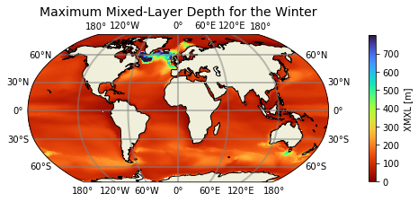
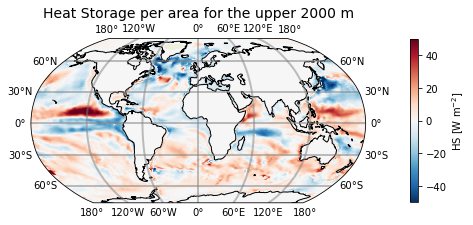

Advanced Plotting#
BEFORE BEGINNING THIS EXERCISE - Check that your kernel (upper right corner, above) is NPL 2023b. This should be the default kernel, but if it is not, click on that button and select NPL 2023b.
This activity was developed primarily by Mauricio Rocha and Gustavo Marques.
Setting up the notebook#
Here we load modules needed for our analysis
# loading modules
# %load_ext watermark # this is so that in the end we can check which module versions we used
%load_ext autoreload
import warnings
warnings.filterwarnings("ignore")
import cartopy.crs as ccrs
import cartopy.feature
import matplotlib.pyplot as plt
import xarray as xr
import numpy as np
import pop_tools
import glob
Get the data#
# Set your username here:
username = "PUT_USER_NAME_HERE"
casename = 'b1850.run_length'
# Here we point to the archive directory from your b1850.run_length simulation
pth = f"/glade/derecho/scratch/{username}/archive/{casename}/ocn/hist/"
# If you were unable to successfully run the b1850.run_length simulation, then feel free to use
# this provided simulation data instead:
#pth = f'/glade/campaign/cesm/tutorial/tutorial_2024_archive/{casename}/ocn/hist/'
# Print path to screen
pth
flist = glob.glob(pth + casename + '.pop.h.00??-??.nc')
ds = xr.open_mfdataset(flist, compat='override', coords='minimal')
Exercise 1#
Maximum mixed-layer depth for the winter months in the northern hemisphere (January, February, and March) and in the southern hemisphere (July, August, and September)
# POP grid
pop_grid = pop_tools.get_grid('POP_gx1v7')
ds['TLONG'] = pop_grid.TLONG; ds['TLAT'] = pop_grid.TLAT
ds['ULONG'] = pop_grid.ULONG; ds['ULAT'] = pop_grid.ULAT
# July, August, and Septemper (JAS)
def is_jas(month):
return (month >= 7) & (month <= 9)
JAS = ds['XMXL'].sel(time=is_jas(ds['XMXL']['time.month'])).mean('time')
# January, February, and March (JFM)
def is_jfm(month):
return (month >= 1) & (month <= 3)
JFM = ds['XMXL'].sel(time=is_jfm(ds['XMXL']['time.month'])).mean('time')
# Find the latitude value closest to the equator
def find_nearest(array, value):
array = np.asarray(array)
idx = (np.abs(array - value)).argmin()
return array[idx]
eq=find_nearest(JAS['TLAT']['TLAT'][:,0], value=0)
print(eq)
# Find the index of this latitude
idx=np.where(JAS['TLAT']['TLAT'][:,0] == eq)[0]
print(idx)
# Create a new array
winter=JFM.copy()
# Since the variable winter already contains the data for the Northern Hemisphere, we will now add the data for the Southern Hemisphere
winter.loc[0:187,:]=JAS.loc[0:187,:]
plt.figure(figsize=(8,6));
ax = plt.axes(projection=ccrs.Robinson());
orig_map=plt.cm.get_cmap('turbo')
scale_color=orig_map.reversed()
cf=(winter*0.01).plot.pcolormesh(ax=ax, # Multiply by 0.01 to transform centimeters to meters
vmax=800,vmin=0,
transform=ccrs.PlateCarree(),
x='TLONG',
y='TLAT',
cmap=scale_color,
add_colorbar=False,
)
ax.coastlines()
ax.add_feature(cartopy.feature.LAND)
ax.gridlines(crs=ccrs.PlateCarree(), draw_labels=True,
linewidth=2, color='gray', alpha=0.5, linestyle='-')
cbar = plt.colorbar(cf, ax=ax, shrink=0.5, pad=0.1, ticks=np.arange(0,800,100), label='XMXL [m]')
plt.title('Maximum Mixed-Layer Depth for the Winter', fontsize=14)
#plt.savefig('advanced_plot_1.png', bbox_inches='tight')# uncomment this to save your figure
Click here for the solution

Figure: Plotting solution.
Exercise 2#
Calculate the heat storage (HS) per area from the temperature tendency for the upper 2000m. Equation: $\(\rm{HF = \uprho_\uptheta~C_p~\int_{z_2}^{z_1}\uptheta_{(z)}'~dz},\)$ where:
HF is heat storage (\(\rm{W~m^{-2}}\)),
\(\uprho_\uptheta\) is the sea water density (\(\rm{kg~m^{-3}}\)),
\(\rm{C_p}\) is the sea water specific heat (\(\rm{J~kg^{-1}~^{\circ}C^{-1}}\)),
\(\rm{dz}\) is the cell thickness (m),
and \(\uptheta\)’ is the temperature tendency (\(\rm{^{\circ}C^{-1}~s^{-1}}\)).
ds_HS=ds['TEND_TEMP'].sel(z_t=slice(0,200000))*ds['dz'].sel(z_t=slice(0,200000))*0.01 # Select the depth and multiply by dz. Unit: oC.s-1.m
ds_HS=ds_HS.sum('z_t') # Sum in depth
ds_HS=ds_HS*1026 # Multiply it by the sea water density. Unit: oC.s-1.kg.m-2
ds_HS=ds_HS*3996 # Multiply it by the sea water heat specific. Unit: W.m-2
plt.figure(figsize=(8,6))
ax = plt.axes(projection=ccrs.Robinson())
orig_map=plt.cm.get_cmap('RdBu')
scale_color=orig_map.reversed()
cf=ds_HS.mean('time').plot.pcolormesh(ax=ax,
transform=ccrs.PlateCarree(),
vmin=-50,
vmax=50,
x='TLONG',
y='TLAT',
cmap=scale_color,
add_colorbar=False,
)
ax.coastlines()
ax.add_feature(cartopy.feature.LAND)
ax.gridlines(crs=ccrs.PlateCarree(), draw_labels=True,
linewidth=2, color='gray', alpha=0.5, linestyle='-')
cbar = plt.colorbar(cf, ax=ax, shrink=0.5, pad=0.1, label='HS [W m$^{-2}$]')
plt.title('Heat Storage per area for the upper 2000 m', fontsize=14)
#plt.savefig('advanced_plot_2.png', bbox_inches='tight')# uncomment this to save your figure
Click here for the solution

Figure: Plotting solution.